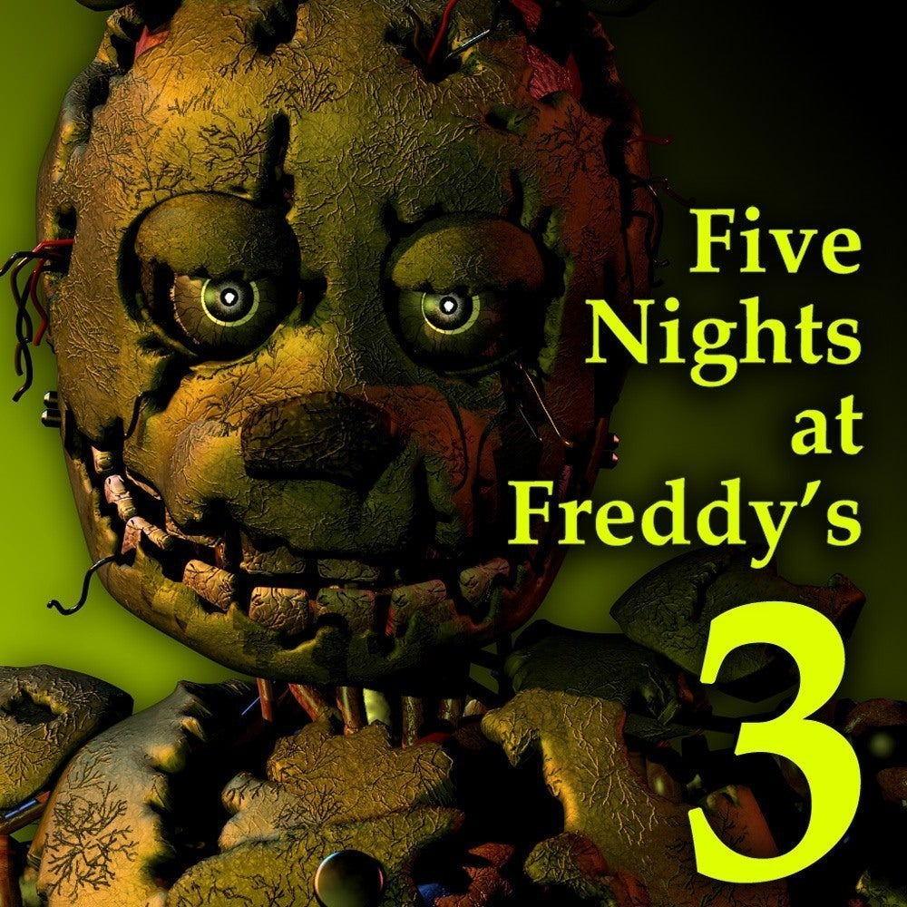

.jpg)

El juego se desarrolla en "Fazbear's Fright: The Horror Attraction", una atracción temática basada en los eventos oscuros del restaurante Freddy Fazbear's Pizza. Este lugar es un parque de atracciones de terror que ha sido construido para capitalizar la leyenda de los eventos ocurridos en los juegos anteriores. La trama se centra en el horror que rodea la atracción y en el animatronic que ha sido recuperado del restaurante original, llamado Springtrap. A medida que el jugador avanza, se revelan detalles sobre el pasado trágico y las leyendas que rodean a Freddy Fazbear's Pizza, incluyendo la presencia de un espíritu vengativo y la misteriosa figura de un "Springlock Suit".
El objetivo principal es sobrevivir durante cinco noches (de 12 a 6 a.m.) mientras se maneja la amenaza del animatronic Springtrap y se gestiona el sistema de seguridad del lugar. El jugador debe vigilar varios sistemas dentro de la atracción Debe ser monitoreado y reparado si se atasca. Una ventilación inactiva causará un aumento en la temperatura de la oficina, lo que puede llevar a una muerte por asfixia debido a la alta temperatura. Se utiliza para atraer a Springtrap hacia áreas específicas. Esto permite al jugador manipular los movimientos del animatronic para evitar que se acerque a la oficina. Las cámaras permiten al jugador vigilar diferentes áreas de la atracción y el movimiento de Springtrap. Las cámaras también permiten observar el sistema de ventilación y los dispositivos de audio. Springtrap es el animatronic principal y la mayor amenaza del juego. Es una versión deteriorada del traje de Spring Bonnie, y su objetivo es llegar a la oficina para atacar al jugador. Springtrap se mueve lentamente pero de manera persistente y puede ser redirigido utilizando los sistemas de audio. El juego utiliza una mecánica de sustos en la que el jugador puede ser atacado por apariciones de otros animatronics y objetos de terror cuando la temperatura de la oficina se vuelve demasiado alta. Además, hay secuencias de susto en las que el jugador puede ser atacado repentinamente si no gestiona correctamente los sistemas.
Este es un link del sitio de origen donde puede conseguir el juego original